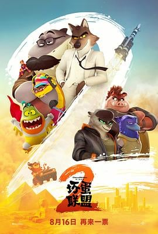

7.6
坏蛋联盟2
The Bad Guys 2
2025
美国
评分 7.6
导演:
皮埃尔·佩里费尔 / J·P·桑斯
演员:
山姆·洛克威尔 / 马克·马龙 / 奥卡菲娜 / 克雷格·罗宾森 / 安东尼·拉莫斯 / 莎姬·贝兹 / 丹妮尔·布鲁克斯
类型:
冒险,动作,喜剧,家庭,犯罪
剧情简介
在经历了第一部的“洗白风波”之后，大灰狼（山姆·洛克威尔 配音）和他的坏蛋联盟终于过上了平静日子。可惜安稳从不是他们的宿命——一次直播挑战，一群神秘的“野性姐妹”在全网发起挑衅，宣称坏蛋联盟早已“没牙没爪”。一场关于荣耀、信任与重拾自我的冒险，由此展开。影片开场就是一场爆笑又炫目的飞车戏：城市夜空中霓虹闪烁，坏蛋联盟驾驶着定制跑车冲破警戒线。导演皮埃尔·佩里费尔延续前作的快节奏剪辑与拟真光影，让动画质感近乎真人实拍。与此同时，新角色“野性姐妹”登场——由三位高智商反派组成，她们既是对手，也是镜像，迫使大灰狼重新思考“做好人”究竟意味着什么。剧情延展出更深的主题。大灰狼一边维系团队，一边怀疑自我；蛇哥（马克·马龙 配音）再次显露贪心本性；鲨鱼、食人鱼和蜘蛛之间的拌嘴成为全片笑点核心。而当政府提出“以恶制恶”的诱惑计划，联盟面临再次堕落的选择。夜色中那句台词成了全片的灵魂：“如果世界不信任好人，那就让坏蛋去证明它错了。”《坏蛋联盟2》在延续动作与喜剧的同时加入更多团队羁绊与成长线。奥卡菲娜的幽默台词让每一场混乱都带着温度，安东尼·拉莫斯为新反派注入电音节奏感，让整部电影节奏鲜明。影片后半段的“博物馆劫案”戏堪称动画版《十一罗汉》，融合高智商对决与视觉喜剧，既刺激又有情怀。最终，当坏蛋联盟在屋顶迎着初升的阳光重聚，尘埃落定的笑声中藏着一点点真心。他们仍是坏蛋，却比任何英雄都更懂得承担。